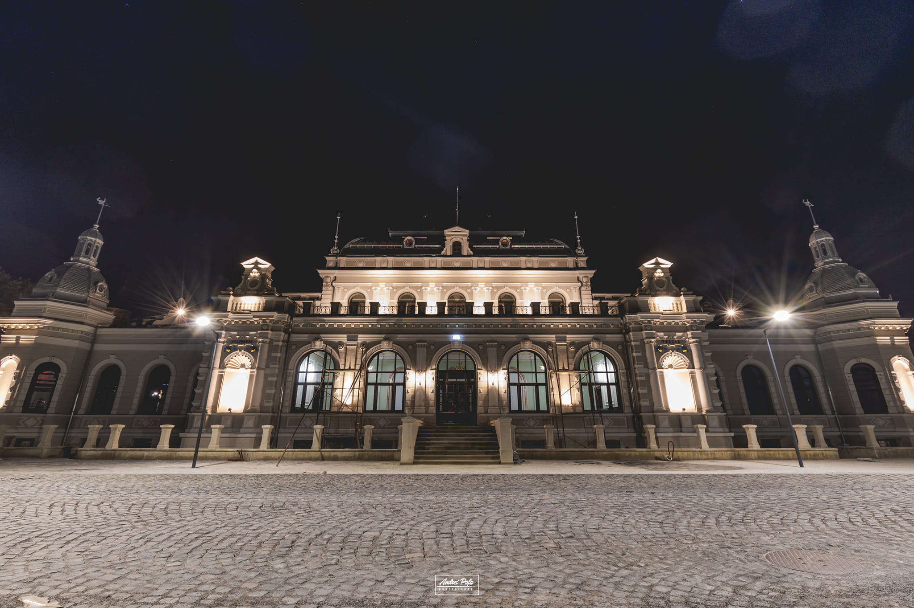
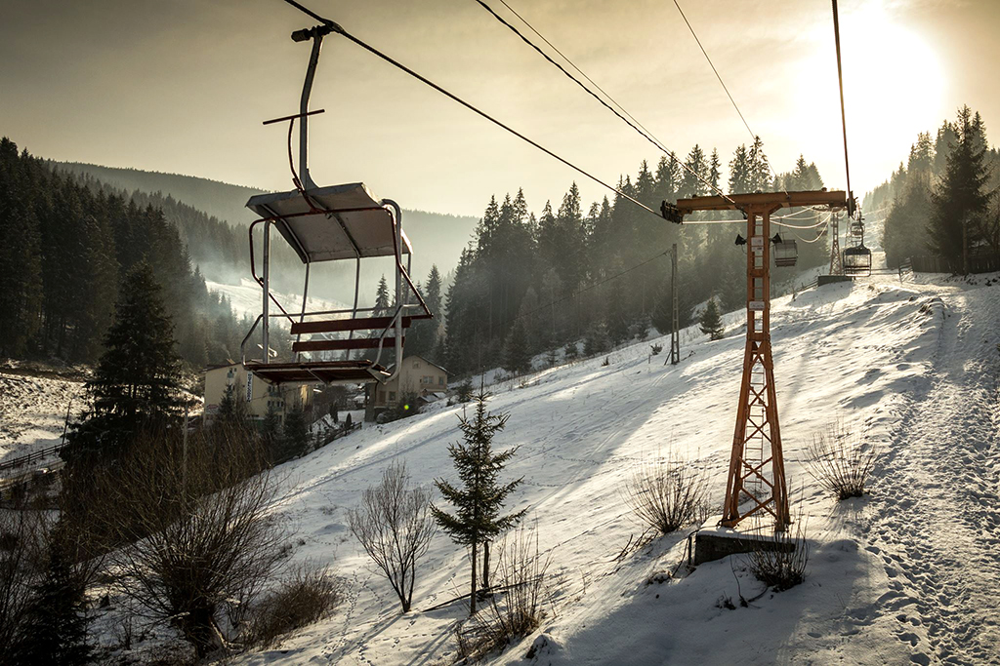
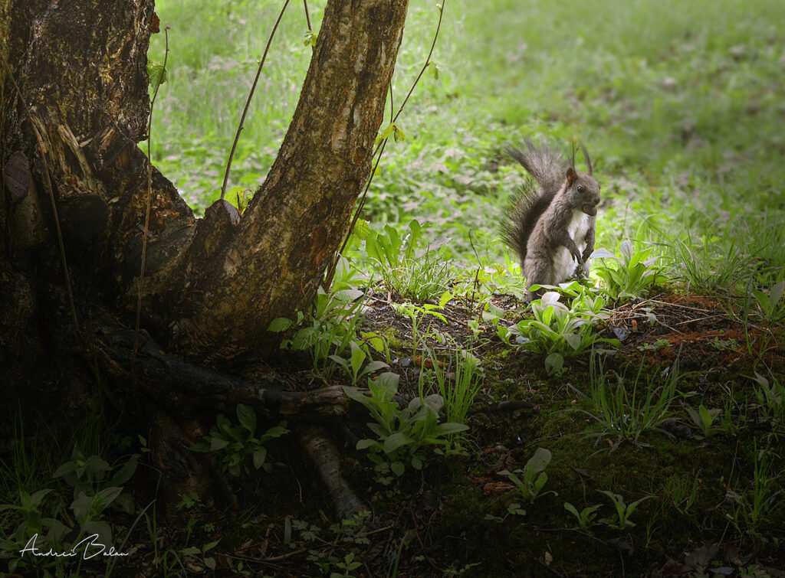
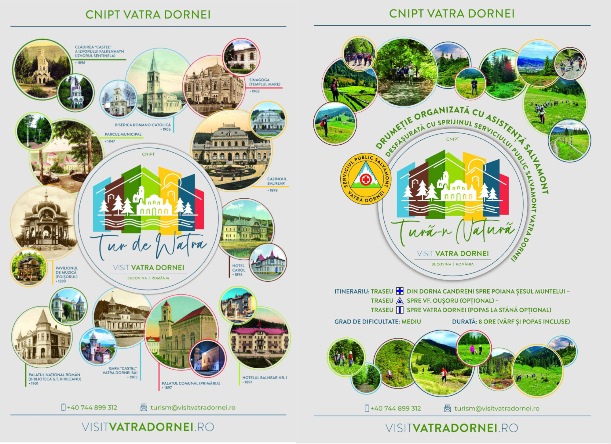
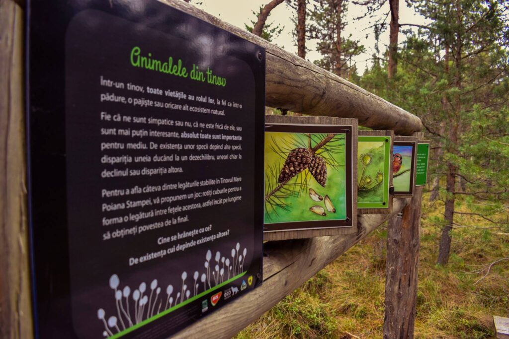
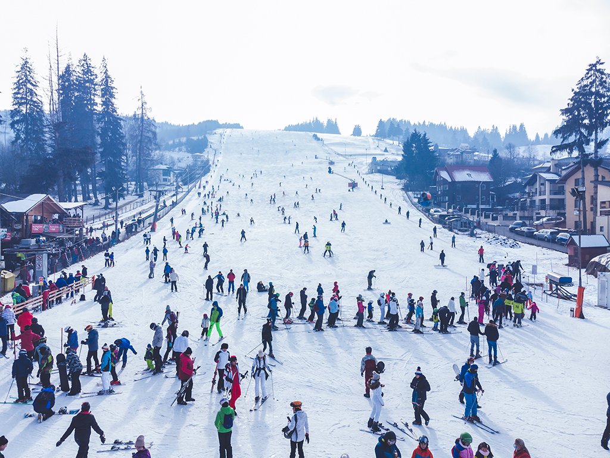
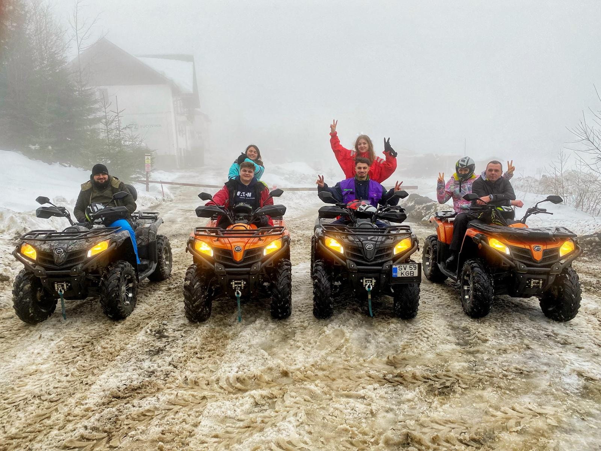
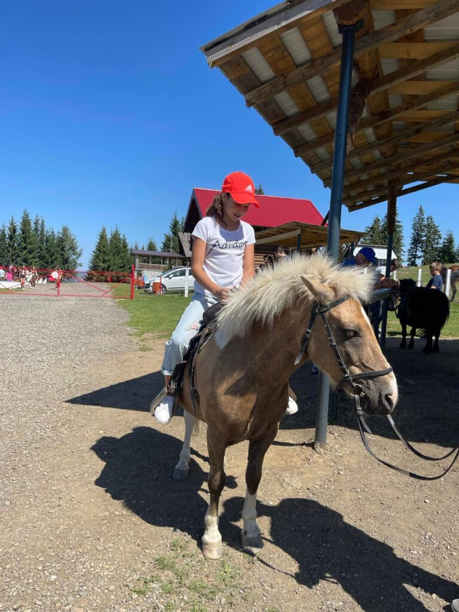
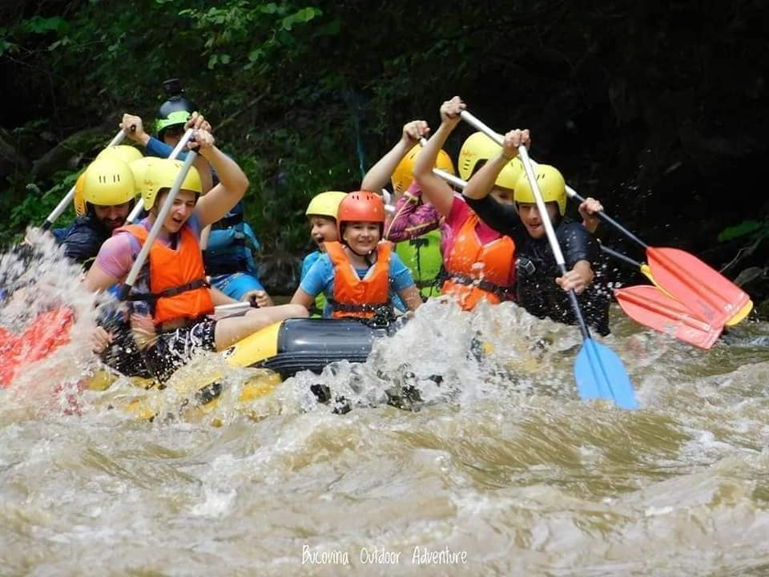

Palatul Dornelor sau Cazinoul din Vatra Dornei este o clădire construită în perioada 1896-1898. Clădirea, numită în trecut Cazinoul Băilor sau Pavilionul Central al Băilor, a îndeplinit de-a lungul timpului mai multe funcțiuni: sală de jocuri de noroc, sală de concerte și spectacole, precum și club muncitoresc. În prezent, Cazinoul este complet renovat, recăpătându-și grația de altădată. El a fost deschis publicului marți, 28 noiembrie 2023, dată la care se împlinesc 105 de ani de la Unirea Bucovinei cu România.

Telescaunul din Vatra Dornei poate fi utilizat pe tot parcursul anului (atât vara, cât și iarna) pentru o plimbare deosebită în sânul naturii până la altitudinea de aproximativ 1260 m. Transportul pe cablu se face prin instalație de tip telescaun compusă din 120 de scaune cu câte 2 locuri. Urcarea durează aproximativ 25 minute.

Veverițele din Parcul Central sunt foarte prietenoase, obișnuite să primească nuci și atenție. Copii se pot bucura de ele, cât și de spațiile de joacă din zonă.

Dacă ești dornic să afli mai multe despre Vatra Dornei sau să te bucuri de priveliști impresionante de la înălțime, Tur de Watra sau Tură-n natură reprezintă opțiunile ideale pentru a crea amintiri de neuitat.
Accesează website-ul Visit Vatra Dornei pentru mai multe informații.

Tinovul Mic din Șaru-Dornei și Tinovul din Poiana Stampei, vă așteaptă cu peisaje spectaculoase și biodiversitate bogată. Aceste două arii protejate sunt bijuterii naturale care oferă o experiență autentică pentru iubitorii de natură și aventură.

Pârtia Parc și Pârtia Veverița sunt în topul preferințelor turiștilor care popoesc la noi. La bazele pârtiilor Parc, respectiv Veverița, puteți găsi o gamă largă de echipamente disponibile pentru închiriere.
Pârtia Parc și Pârtia Veverița sunt în topul preferințelor turiștilor care popoesc la noi. La bazele pârtiilor Parc, respectiv Veverița, puteți găsi o gamă largă de echipamente disponibile pentru închiriere.

Plimbările cu ATV-ul în țara Dornelor oferă o modalitate captivantă de a descoperi cele mai bune locuri, de la păduri dense la vârfuri muntoase și până la pășuni verzi, toate încadrate de aerul proaspăt al zonei. Cu trasee special amenajate, veți avea ocazia să explorați aceste locuri uimitoare într-un mod activ și palpitant.

Turismul ecvestru poate fi practicat chiar și de persoane neexperimentate în echitație. Se recomandã, în special celor foarte stresați, fiind știut cã întotdeauna caii au un efect calmant dar și celor care doresc sã facã mișcare, echitația fiind un sport care, în ciuda aparențelor, pune toți mușchii în mișcare.

În Vatra Dornei ai posibilitatea unei plimbări pe cărări de ape, în ambianță deosebită,și a unei odihne binemeritate, pe malul apei la un foc domol cu iz de fum și slanină perpelită.